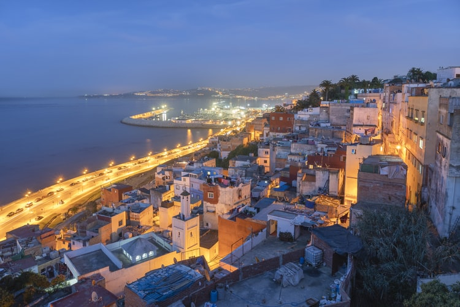

Tanger : Entre nostalgie et modernité
Publié le 10 Janvier 2026 par Asmae
La porte de l'Afrique : Tanger est une ville qui ne ressemble à aucune autre au Maroc. Ici, on sent encore l'ombre des écrivains de la "Beat Generation" et le parfum de l'époque où la ville était une zone internationale. En marchant sur le front de mer, on voit l'Espagne à l'horizon, si proche qu'on a l'impression de pouvoir la toucher.
La Casbah : Monter les marches de la Casbah est un rite de passage. Une fois en haut, au point de vue du "Détroit", le vent souffle fort et l'on contemple la rencontre entre l'Atlantique et la Méditerranée. C'est ici que j'ai compris pourquoi tant d'artistes comme Matisse ou Delacroix ont perdu la tête pour la lumière de cette ville.
"À Tanger, on ne vient pas chercher le dépaysement total, on vient chercher cette frontière floue entre deux mondes, entre hier et demain."
Mon rituel : Je ne peux pas passer à Tanger sans aller au Café Hafa. On s'assoit sur les terrasses en gradins, on commande un thé à la menthe très sucré, et on regarde les ferries passer vers Tarifa. Le temps s'arrête, tout simplement.
📖 Carnet du Voyageur
- La Grotte d'Hercule : À quelques kilomètres du centre, une merveille naturelle dont l'ouverture sur la mer dessine la carte de l'Afrique.
- Le Grand Socco : Pour l'effervescence du marché et voir les femmes du Rif avec leurs chapeaux traditionnels (Mendil).
- Où dormir : Un petit riad dans la médina pour entendre l'appel à la prière se mêler aux sirènes des bateaux.
← Retour aux récits